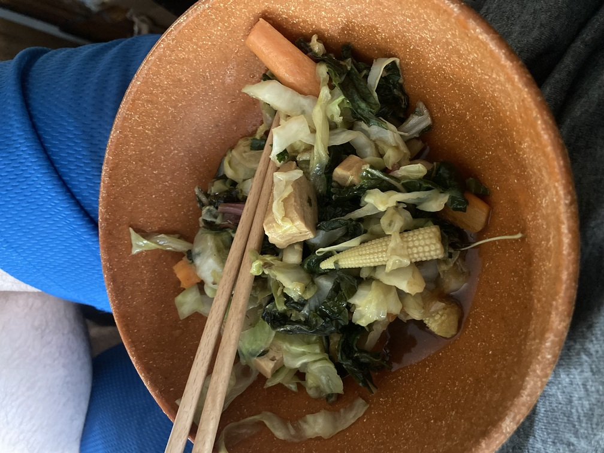

Stir Fry

Description
This is a recipe for a stir fry that takes me under 40 minutes to make, serves two.
Ingredients
- 1 Carrot
- 1/2 Cabbage
- Handful of Baby Corn
- Tofu
- 1 Tbsp. Soy Sauce
- 1 Tbsp. Cooking Rice Wine
- Canola Oil
- 1/2 Tbsp. Sesame Oil
Steps
- Cut up cabbage and carrot
- Along with baby corn, add to wok and stir fry
- After vegetables soften, add tofu and cook for two minutes
- Add sesame oil, stir
- Add soy sauce and rice wine, cook for 3 minutes on reduced heat
- Serve with rice